O Hub é o sistema interno da Adami Captal. Nele ficam o CRM, os relatórios dos clientes, as ferramentas de planejamento, os simuladores e o seu fechamento de comissão. Tudo num endereço só, com um login só.
Este manual mostra o caminho completo: como entrar pela primeira vez, como proteger a sua conta, o que cada ferramenta faz, quando usar e como preencher. As telas que aparecem aqui usam dados fictícios (a "Família Exemplo" e a assessora "Ana Ribeiro"). Os números são ilustrativos.
Um portal único com tudo o que o assessor usa no dia a dia: acompanhar o cliente, preparar reuniões, entregar relatórios e conferir a comissão.
Você entra pelo navegador, em adamicaptal.com.br/hub. Não precisa instalar nada. Funciona no Chrome, Safari, Edge e Firefox, no computador ou no celular. Os dados ficam guardados no servidor: o que você grava aparece igual em qualquer aparelho.
Os módulos estão organizados em quatro grupos no menu da esquerda. Você só vê os que o seu perfil libera (capítulo 5).
Jornada do cliente da prospecção à captação, agenda, carteira, Net New Money e negócios de consórcio e seguro.
A trilha de reuniões R1 a R4: o que fazer em cada etapa, quem participa, o que entregar e o ritmo esperado.
Lançamento mensal das carteiras e geração do Relatório Consolidado em PDF.
Projeção de patrimônio e renda, sucessão, proteção, previdência e alavancagem.
Plano Patrimonial e Análise de Enquadramento em Word, com política, bandas e movimentações.
Imóveis, projetos, histórico de retornos e apresentação para clientes private.
Material do comitê do mês: cenário, desempenho, diretrizes e as carteiras recomendadas, em PDF.
Recomendações de renda variável, card para o grupo de clientes e histórico das operações.
Valor disponível do cliente, ativos boletados e quanto falta alocar.
Quanto juntar para manter o padrão de vida e quanto dá para retirar por mês.
Em quanto tempo a taxa melhor compensa o deságio de sair antes do vencimento.
Projeção da receita de swing trade e estruturadas contra a meta do mês.
O seu fechamento do mês, por categoria e por cliente, depois que o Financeiro libera.
O acesso é criado pela administração. Você recebe um convite por e-mail e cria a sua própria senha. Leva menos de cinco minutos.
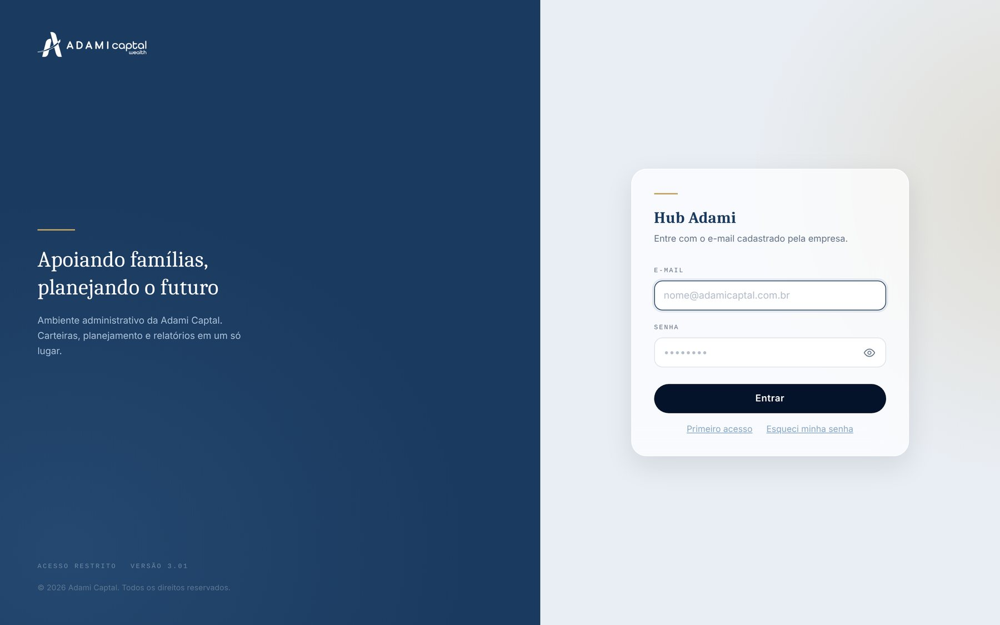
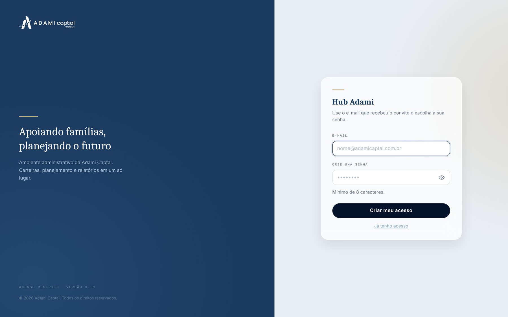
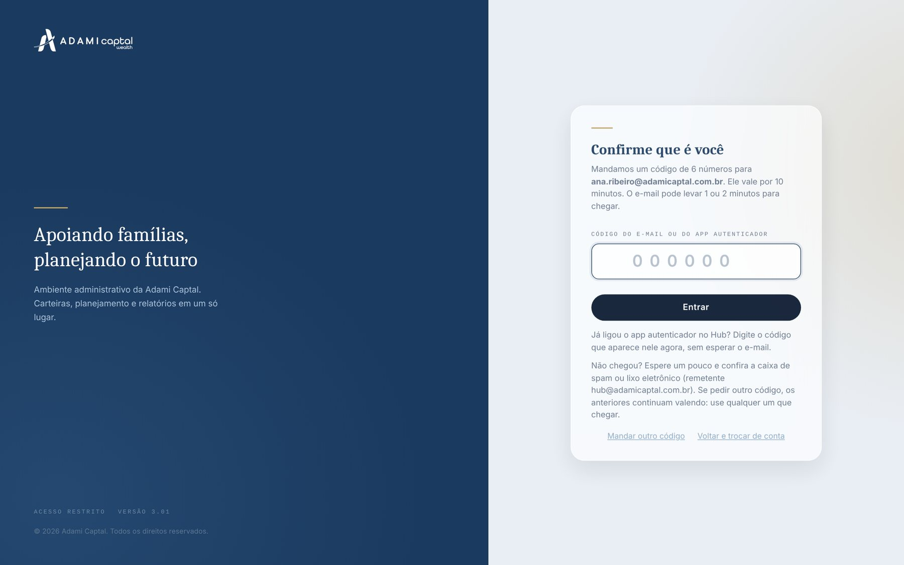
O e-mail digitado precisa ser exatamente o que recebeu o convite. Confira se não há erro de digitação (".com.br" e não ".com"). Se estiver certo e mesmo assim não passar, peça à administração para reenviar o convite.
Basta abrir adamicaptal.com.br/hub, digitar e-mail e senha e clicar em Entrar. Em seguida, confirme com o código do app autenticador (ou do e-mail). Salve o endereço nos favoritos do navegador.
O Hub guarda dados de clientes. Por isso a entrada tem duas etapas: a senha e um código que só você recebe. E o acesso vence todo dia à meia-noite.
Depois da senha, o Hub pede um código de 6 números. Esse código pode vir de dois lugares:
| Forma | Como chega | Quando usar |
|---|---|---|
| Código por e-mail | Enviado automaticamente para o seu e-mail corporativo a cada login. Vale por 10 minutos. | Sempre disponível. Pode demorar 1 ou 2 minutos para chegar. |
| App autenticador | Gerado no seu celular, num aplicativo como o Google Authenticator ou o Microsoft Authenticator. Muda a cada 30 segundos. | Recomendado. É instantâneo e funciona mesmo se o e-mail estiver fora do ar. |
Se o servidor de e-mail tiver uma instabilidade, o código não chega e você fica sem acesso. Com o app ligado, você digita o código do celular e entra na hora, sem depender do e-mail. Todo assessor deve ligar o app no primeiro dia.
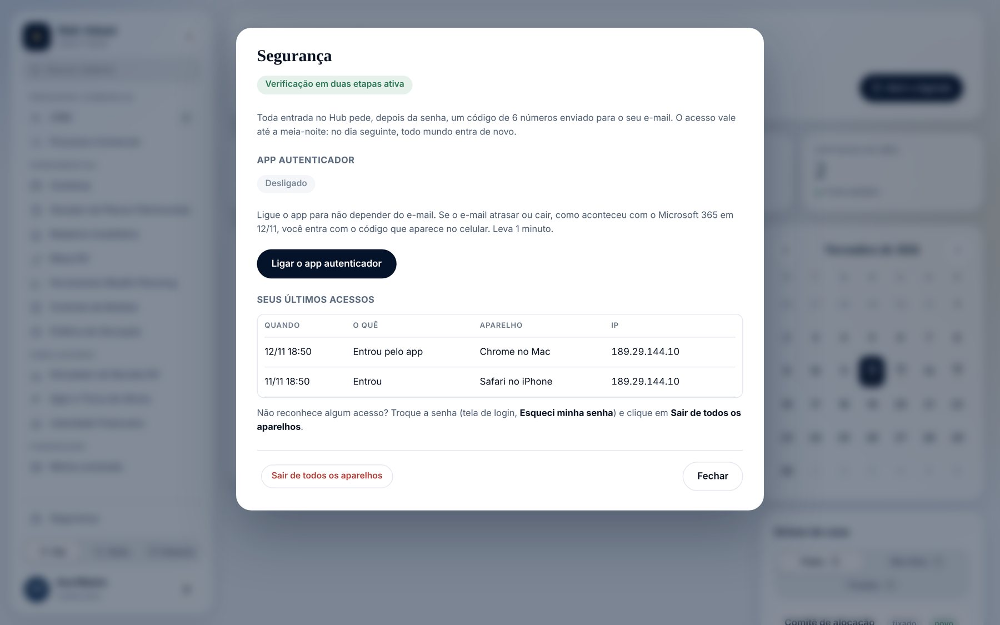
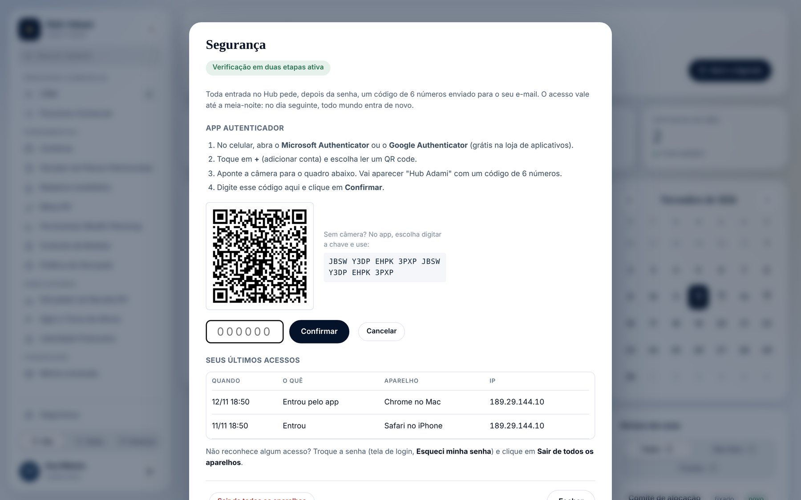
Ao tocar em +, escolha Outra conta (Google, Facebook etc.). Não escolha "Conta corporativa ou de estudante": essa opção só aceita contas da Microsoft e recusa o QR do Hub. Se preferir, toque em "Inserir código manualmente" e digite a chave que aparece embaixo do QR.
Para quem já ligou o app autenticador, o Hub pode dispensar o código no computador que você usa todo dia. A senha continua sendo pedida diariamente; só o código deixa de ser.
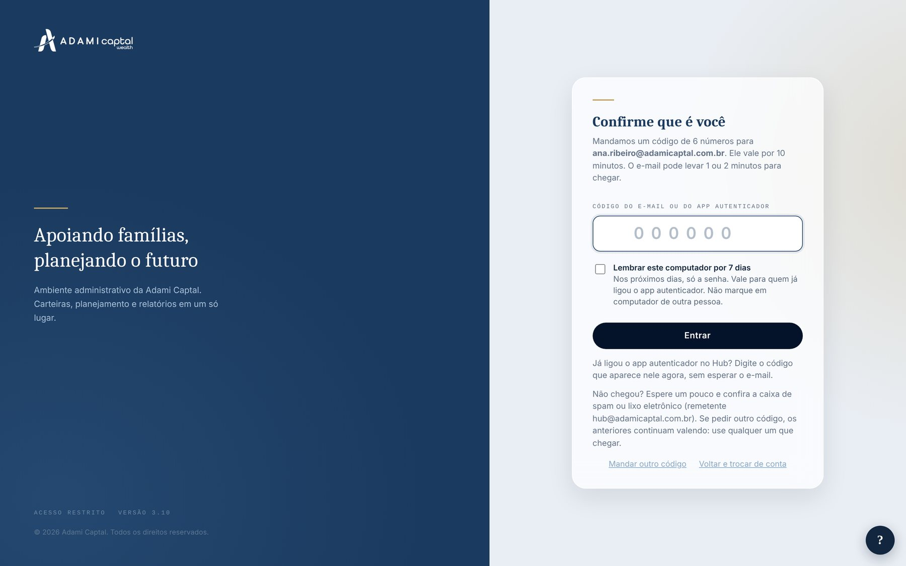
Nunca marque em computador compartilhado ou de outra pessoa. A lista de aparelhos lembrados fica em Segurança, com o botão Esquecer em cada um. Sair de todos os aparelhos e desligar o app também esquecem todos.
A confirmação por código vale só para o dia. À meia-noite (horário de Brasília) o acesso vence e, no dia seguinte, o Hub pede o código de novo. É de propósito: um computador esquecido aberto não fica com acesso aos dados no dia seguinte.
Na tela de Segurança aparece a lista dos seus últimos acessos: data, se entrou por e-mail ou pelo app, aparelho e endereço. Se aparecer algum que você não reconhece:
Ao entrar, você vê o resumo do seu dia: números da carteira, tarefas de hoje, o calendário do mês e os avisos da casa.
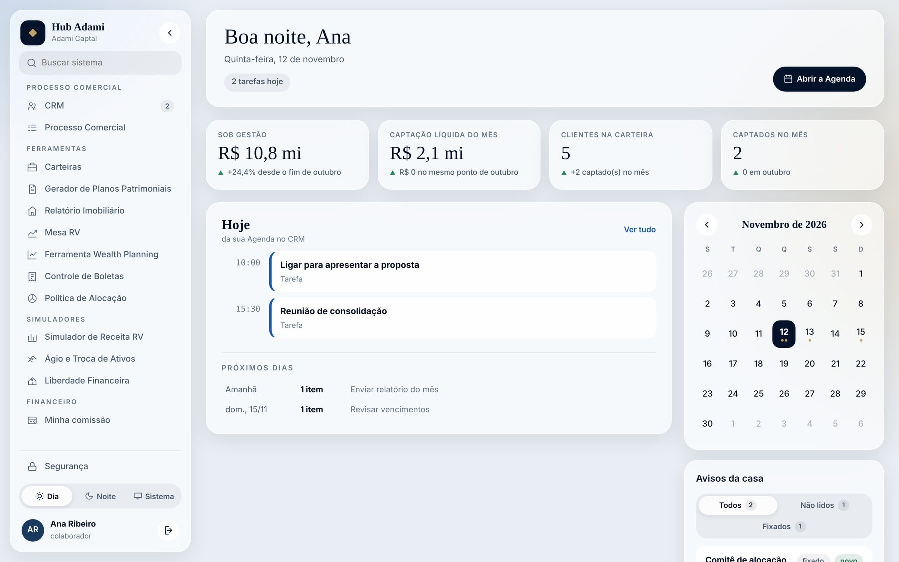
| Área | O que mostra |
|---|---|
| Saudação e data | Seu nome e quantas tarefas você tem hoje. O botão Abrir a Agenda leva direto à agenda do CRM. |
| Números | Patrimônio sob gestão, captação líquida do mês, clientes na carteira e captações do mês, com a tendência em relação ao mês anterior. |
| Hoje | As tarefas e reuniões do dia que estão na Agenda do CRM, com horário. |
| Próximos dias | O que vem a seguir na agenda. |
| Calendário | O mês atual. Os dias com compromisso ficam marcados. Clique num dia para ver o que há nele. |
| Avisos da casa | Comunicados da gestão: comitês, novidades, prazos. Os fixados aparecem primeiro. Ao abrir um aviso, ele conta como lido. |
Enquanto houver algo do começo por fazer, a tela inicial mostra o quadro Primeiros passos no Hub: ligar o app autenticador, abrir o manual, ler os avisos, registrar a primeira atividade no CRM e marcar o próximo contato de quem está em jornada. Cada item é conferido pelo próprio Hub e fica verde sozinho quando você faz. O quadro some quando tudo estiver feito, ou se você clicar em Ocultar.
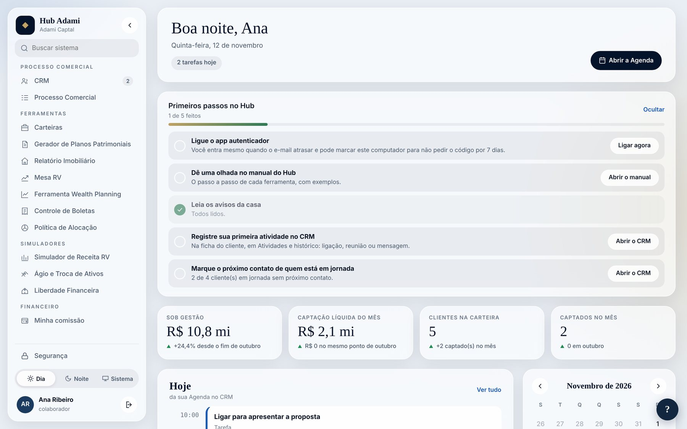
Em todas as telas do Hub há um botão redondo com ? no canto inferior direito. Ele abre um painel com três coisas:
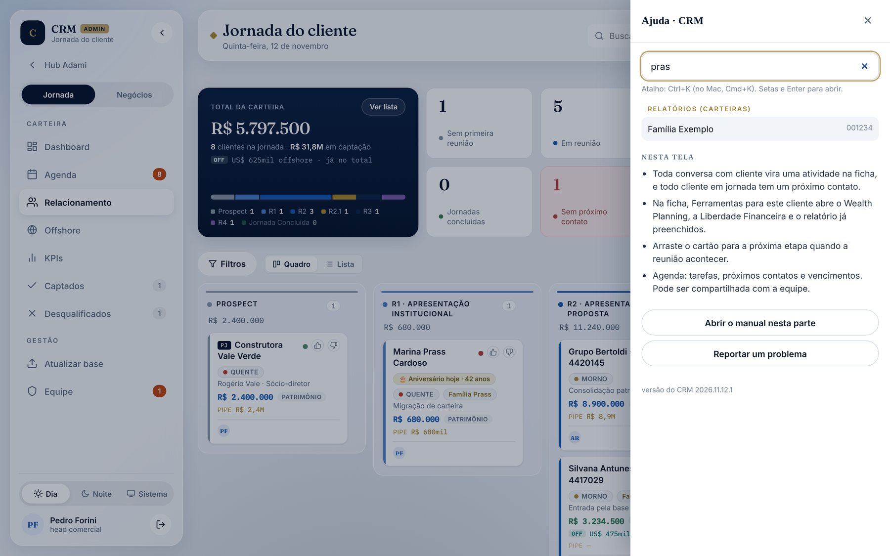
O Hub funciona no navegador do celular e pode virar um ícone na tela inicial, como um aplicativo:
Na primeira vez que abrir pelo ícone, entre com e-mail, senha e código, como no computador.
No rodapé de cada módulo aparece a versão (por exemplo, "versão 3.01"). Se alguém avisar que saiu uma novidade e você não a vê, provavelmente o navegador está mostrando uma cópia antiga. Recarregue com Ctrl + Shift + R (Windows) ou Cmd + Shift + R (Mac) e confira o selo.
Cada pessoa vê só o que precisa. O acesso é definido por perfil, e a regra é aplicada no servidor: não depende da tela.
| Perfil | Para quem | O que libera |
|---|---|---|
| Assessor | Assessores de investimentos | CRM (os próprios clientes), Processo Comercial, Carteiras dos próprios clientes, ferramentas, simuladores e Minha comissão. |
| Administrador | Backoffice e operações | Tudo do assessor, mais todas as carteiras: lança os dados do mês, conferência e cópias de segurança. |
| Mesa RV | Especialistas de renda variável | Registrar e encerrar operações na Mesa RV. |
| Financeiro | Equipe financeira | Comissões da equipe: planilhas, regras, fechamento e pagamentos. |
| Admin do CRM | Head comercial | No CRM, a visão da equipe inteira, KPIs, atualização da base do BTG e avisos da casa. |
| Master | Sócios | Tudo, inclusive convites, perfis, Fluxo e Captação e o registro de atividades. |
O centro da rotina comercial. Cada cliente e cada prospect tem uma ficha, com a etapa da jornada, o pipe, as atividades e os arquivos. O que você registra aqui alimenta o dashboard, a agenda e os números da tela inicial.
O CRM tem duas abas no topo do menu: Jornada (a relação com o cliente de investimentos) e Negócios (consórcio e seguro). Você entra pelo card CRM no Hub, sem novo login.
Em Relacionamento, cada coluna é uma etapa da trilha comercial (Prospect, R1, R2, R2.1, R3, R4) e cada cartão é um cliente. Arraste o cartão para a próxima coluna quando a reunião acontecer. No alto ficam os números da carteira e as notificações.
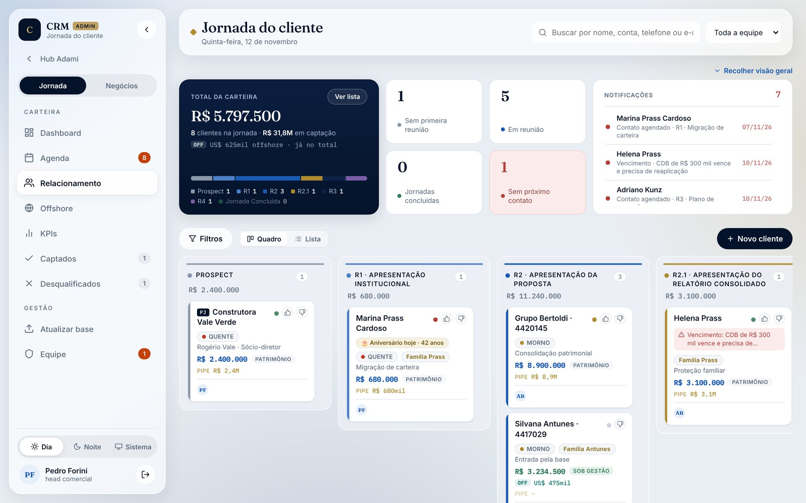
Clique em qualquer cartão para abrir a ficha. É nela que fica toda a história do relacionamento.
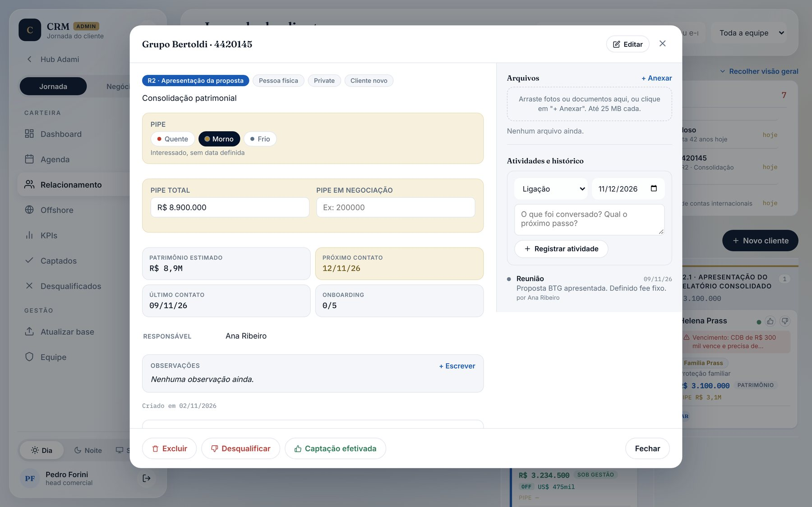
| Campo | Como preencher |
|---|---|
| Pipe | Quente: vai fechar em breve. Morno: interessado, sem data. Frio: contato inicial ou parado. |
| Pipe total | Quanto do patrimônio do cliente pode vir para o escritório. |
| Pipe em negociação | O valor que está em conversa agora, com proposta na mesa. |
| Próximo contato | Data do próximo passo. Vira tarefa na Agenda e alerta no dashboard quando atrasa. |
| Observações | O que importa saber do cliente: família, objetivos, preferências. Clique em + Escrever. |
| Arquivos | Arraste fotos e documentos (até 25 MB cada) ou clique em + Anexar. Relatórios do Wealth Planning e do Plano Patrimonial chegam aqui sozinhos quando você usa "Salvar no CRM". |
| Atividades e histórico | Registre cada contato: tipo (ligação, reunião, e-mail, WhatsApp), data e o que foi conversado. Clique em Registrar atividade. |
No fim da ficha, o quadro Ferramentas para este cliente abre o Wealth Planning, a Liberdade Financeira, o Plano Patrimonial e o Controle de Boletas já com o nome, a idade e o patrimônio do cliente preenchidos, e o Relatório do mês direto nas Carteiras. Uma faixa amarela no alto da ferramenta avisa o que veio da ficha. Confira antes de apresentar. Ao salvar no CRM, o cliente já vem escolhido.
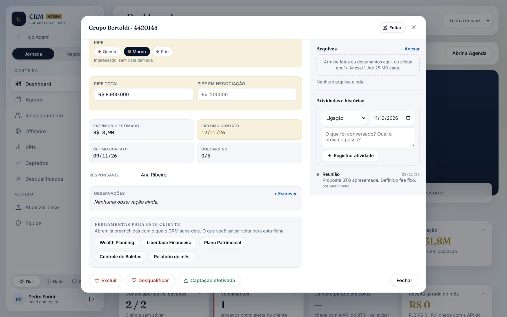
No rodapé da ficha: Captação efetivada quando o dinheiro entrou, Desqualificar quando o cliente não segue (fica guardado em Desqualificados) e Excluir apenas para cadastro errado.
Toda conversa com cliente vira uma atividade, e todo cliente ativo tem um próximo contato marcado. É isso que faz a agenda, os alertas e os números da equipe funcionarem.
A visão geral da sua carteira e da sua produção. Mostra o patrimônio sob gestão (onshore e offshore), o Net New Money do mês, a captação bruta, resgates, o que está em captação e os alertas: contatos atrasados, vencimentos, dinheiro parado na conta, receita gerada.
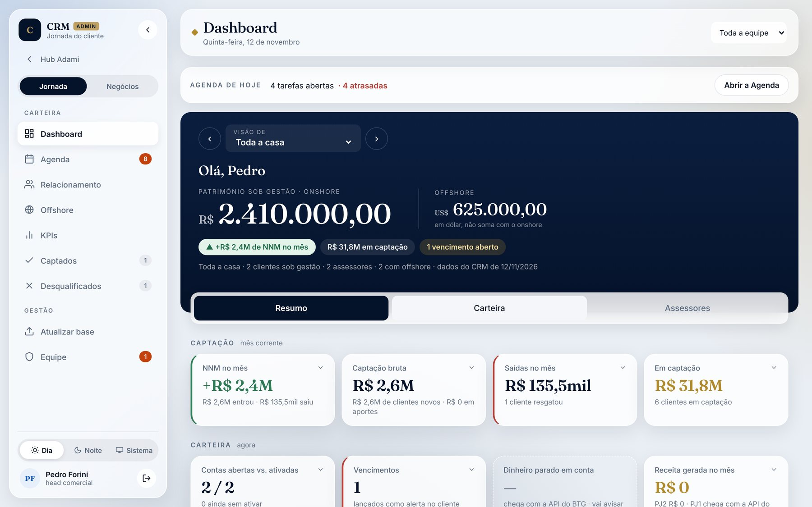
As abas Resumo, Carteira e Rotina mostram a mesma carteira por ângulos diferentes: os números do mês, a distribuição por segmento e temperatura, e a disciplina de contatos.
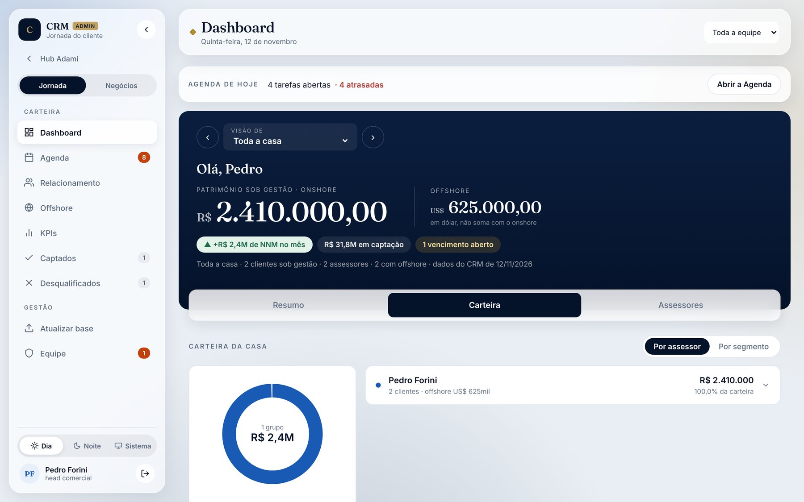
Suas tarefas e reuniões em visão de hoje, semana ou mês. Cada item tem uma cor conforme a origem: Própria (criada por você), Atribuída (passada pelo head comercial ou por um master), Próximo contato (a data marcada na ficha do cliente), Vencimento (alerta de vencimento de ativo) e Régua (contato previsto pela régua de relacionamento).
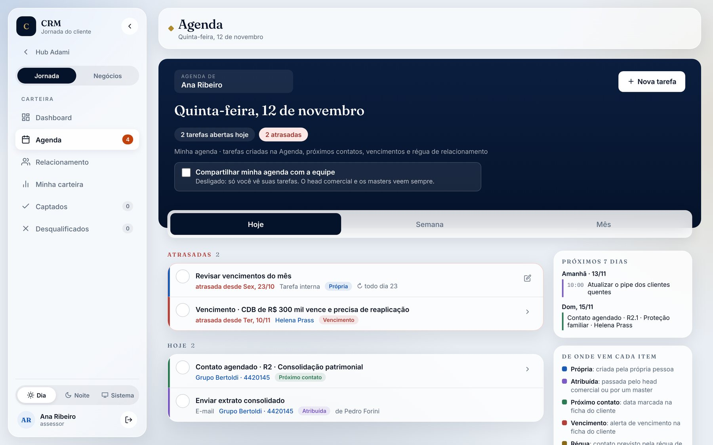
Todo dia de manhã, o Hub manda para o seu e-mail um resumo da agenda do dia. A opção Compartilhar minha agenda com a equipe deixa os colegas verem os seus compromissos, só para leitura.
Na aba Negócios, cada proposta de consórcio ou seguro vira um cartão no quadro, com produto, valor e etapa. Em Minha produção você acompanha o que fechou no mês. Em Fechados e Perdidos fica o histórico.
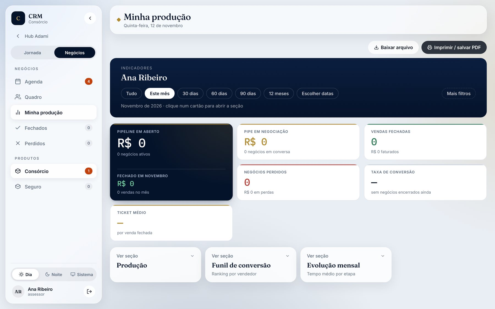
Ao abrir o CRM, uma janela mostra o que precisa de atenção hoje: vencimentos próximos, contatos atrasados, saldo parado na conta do cliente. Clique em um alerta para abrir a ficha do cliente.
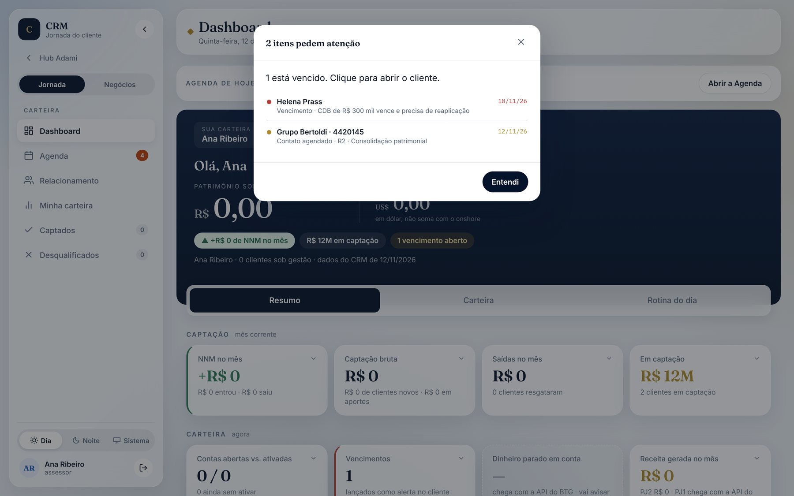
| Quando | O que fazer no CRM |
|---|---|
| Começo do dia | Ler o e-mail da agenda, abrir os alertas, conferir os contatos atrasados no dashboard. |
| Após cada contato | Registrar a atividade, atualizar o pipe e marcar o próximo contato. |
| Após cada reunião | Mover o cartão para a etapa seguinte e anexar o material apresentado. |
| Fim da semana | Revisar o quadro de Relacionamento: ninguém parado sem próximo passo. |
A trilha de reuniões que transforma um contato em cliente consolidado. O módulo mostra, etapa por etapa, o que fazer, quem participa, o que entregar e em quanto tempo avançar.
| Segmento | Patrimônio | Entregáveis principais |
|---|---|---|
| Advisory | Até R$ 1 milhão | Jornada estruturada, base para fidelização e crescimento patrimonial. |
| Exclusive | R$ 1 a 5 milhões | Relatório Consolidado completo como ferramenta central de visibilidade. |
| Private | Acima de R$ 5 milhões | Relatório Consolidado, Plano Patrimonial, Consolidação Imobiliária e Wealth Planning BTG. |
| Etapa | Quem participa | Ritmo até a próxima |
|---|---|---|
| R1 | Assessor | 3 dias. A proposta deve chegar enquanto o cliente ainda está animado com a descoberta. |
| R2 | Assessor + Investor (opcional) | 7 dias para preparar o Relatório Consolidado real e agendar a consolidação. |
| R2.1 | Assessor + Investor | 7 dias para avançar ao Plano de Liberdade Financeira sem deixar esfriar. |
| R3 | Assessor + Investor (opcional) | 7 dias para fechar o ciclo com a reunião de produto. |
| R4 | Assessor + Especialista | Uma pauta por reunião. |
A espinha dorsal é a mesma, com camadas a mais: na R2 entram os modelos de Plano Patrimonial e Análise de Enquadramento; na R2.1, o Plano Patrimonial real (com formulário enviado antes ao cliente); na R3, Planejamento Imobiliário e Wealth Planning BTG.
Quem já tem conta e recursos no escritório entra direto na R2 (Entrada), sem reunião institucional. O foco é ampliar a fatia do patrimônio que fica com a Adami.
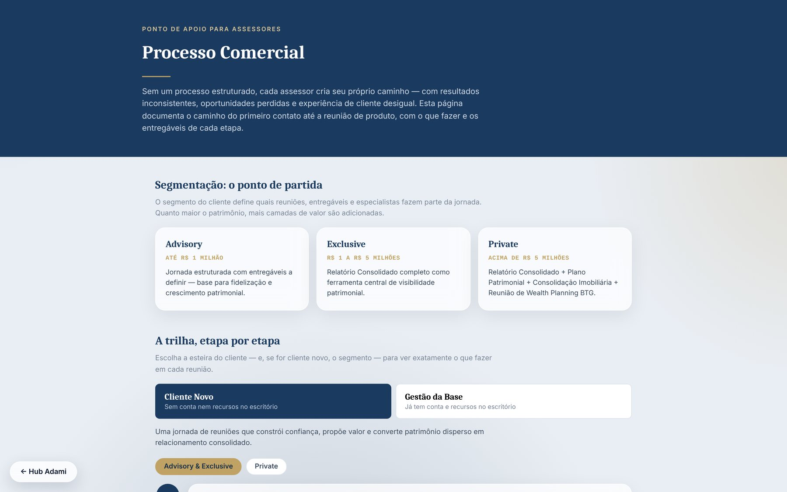
| Reunião | Ferramentas do Hub |
|---|---|
| R1 | CRM (cadastro e ficha). |
| R2 | Carteiras (Relatório Consolidado modelo), Gerador de Planos Patrimoniais (modelo, para Private). |
| R2.1 | Carteiras (relatório real), Controle de Boletas, Ágio e Troca de Ativos, Plano Patrimonial real. |
| R3 | Liberdade Financeira, Ferramenta Wealth Planning, Relatório Imobiliário. |
| R4 | Wealth Planning (proteção, previdência, alavancagem) e CRM Negócios. |
Todo mês, as posições de cada cliente são lançadas e o Hub gera o Relatório Consolidado de Investimentos: um PDF com a identidade da Adami, pronto para enviar ao cliente.
O módulo tem quatro abas: Preencher (lançamento do mês, feito pela administração), Comentários do mês, Relatório e Histórico. À esquerda fica a lista de clientes; o mês de referência fica no alto, com setas e um calendário. No calendário e na lista, um ponto verde indica mês feito (conferido e marcado como pronto) e um ponto amarelo, mês lançado que ainda falta marcar.
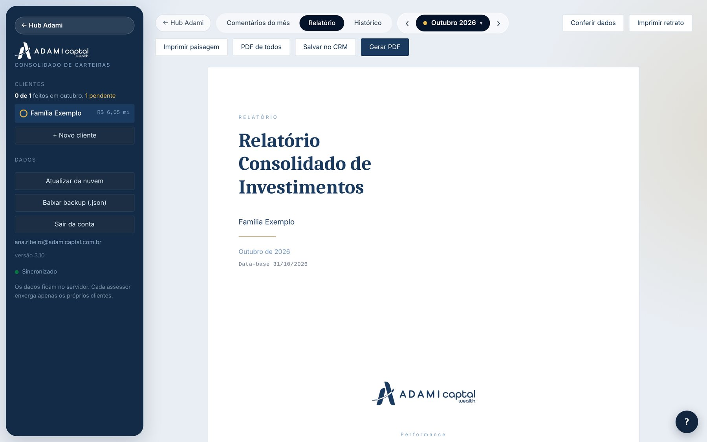
No fim do mês, PDF de todos gera o relatório de todos os seus clientes com lançamento naquele mês, um arquivo por cliente. Marque se quer baixar os arquivos, salvar cada um na ficha do cliente no CRM, ou os dois. Deixe a aba aberta até aparecer "Pronto". Na primeira vez, o navegador pode perguntar se permite vários downloads: clique em Permitir.
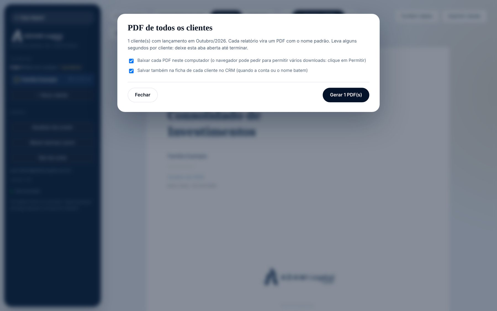
O Imprimir retrato e o Imprimir paisagem continuam lá, para quem preferir a janela de impressão.
O relatório completo tem em média de 15 a 20 páginas, conforme o tamanho da carteira. Seções: comentários do mês, resumo do patrimônio, distribuição por instituição, por categoria e por estratégia, retornos mensais, desempenho por conta, carteira contra os indicadores, lista de ativos, evolução do patrimônio, próximos vencimentos, patrimônio offshore e o aviso legal. As páginas abaixo são do relatório da Família Exemplo, que segue junto com este manual.
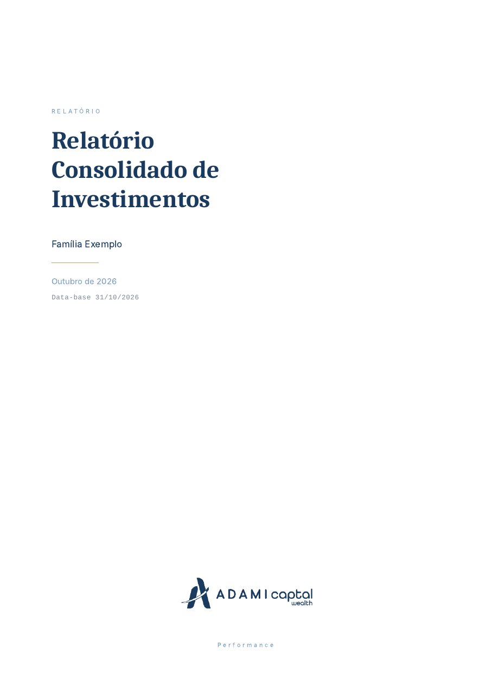
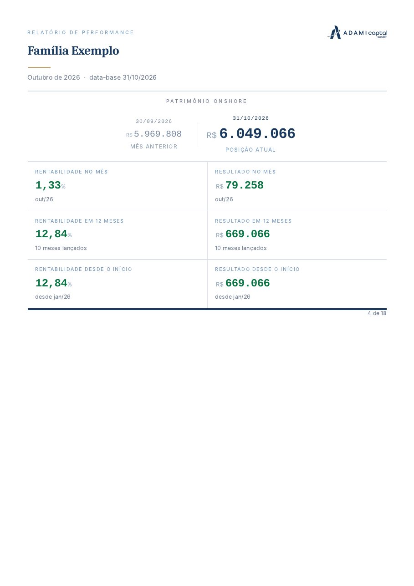
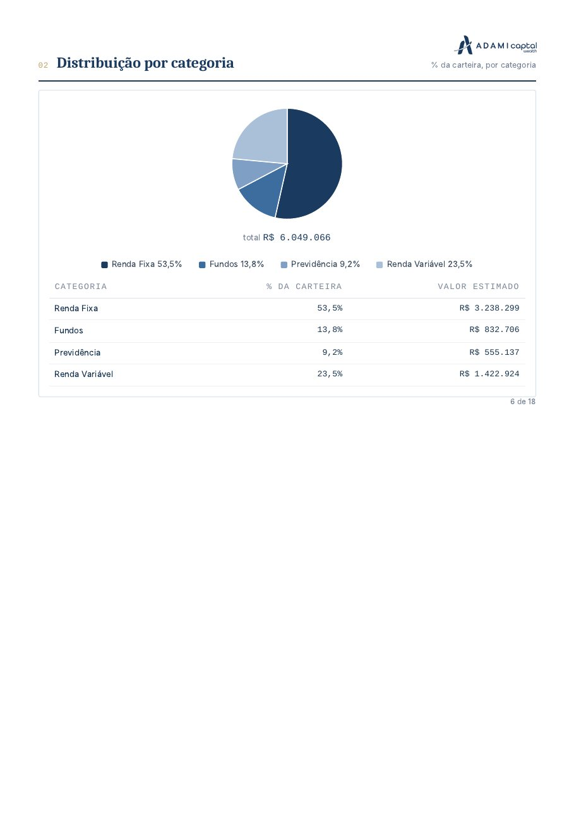
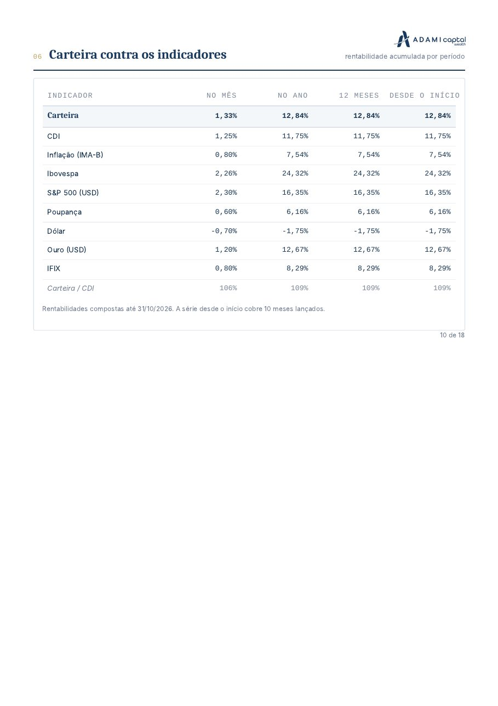
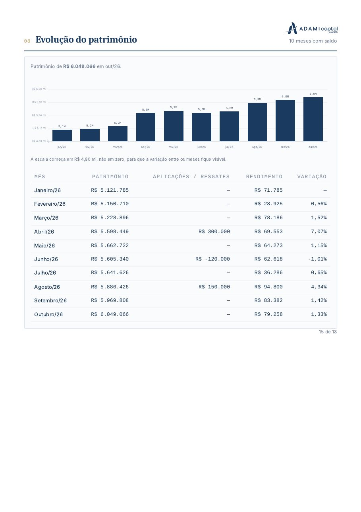
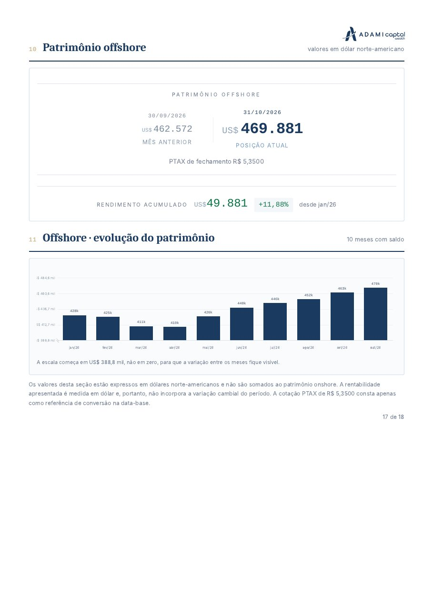
Feito pela administração (perfil Administrador). Vale conhecer, para entender de onde vêm os números do relatório e saber o que pedir quando algo estiver errado.
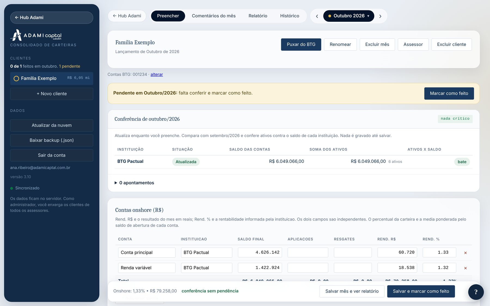
| Campo | O que é |
|---|---|
| Conta e instituição | Cada conta do cliente, em cada instituição. |
| Saldo final | O saldo no último dia do mês. |
| Aplicações e resgates | O que entrou e o que saiu no mês. Sempre em número positivo. |
| Rend. R$ e Rend. % | O resultado do mês em reais e a rentabilidade informada pela instituição. São independentes: um aporte no meio do mês muda um sem mudar o outro. |
| PTAX | Cotação do dólar no fechamento, só como referência. Onshore e offshore nunca se somam. |
| Ativos e vencimentos | A lista de ativos com categoria, estratégia, taxa e posição, e os próximos vencimentos. |
No alto do Preencher fica a Conferência do mês, que se atualiza enquanto os dados são preenchidos: mostra cada instituição (atualizada ou ainda com valores do mês anterior), se a soma dos ativos bate com o saldo das contas e o que diverge do mês anterior (categoria trocada, posição igual sem rentabilidade, ativo novo ou que saiu, campo faltando). Depois de uma importação, mostra também o que ela mudou, com Desfazer importação. Linhas em amarelo ainda são do mês anterior; campos com borda vermelha estão faltando. Com tudo conferido, Salvar e marcar como feito dá o mês como pronto e oferece o próximo cliente pendente.
O botão Puxar do BTG busca os dados das contas do BTG automaticamente. O mês seguinte herda as contas do anterior: só é preciso atualizar os valores.
Texto que abre o relatório: o resumo do mês e a visão para os próximos meses. É escrito uma vez e vale para todos os clientes daquele mês.
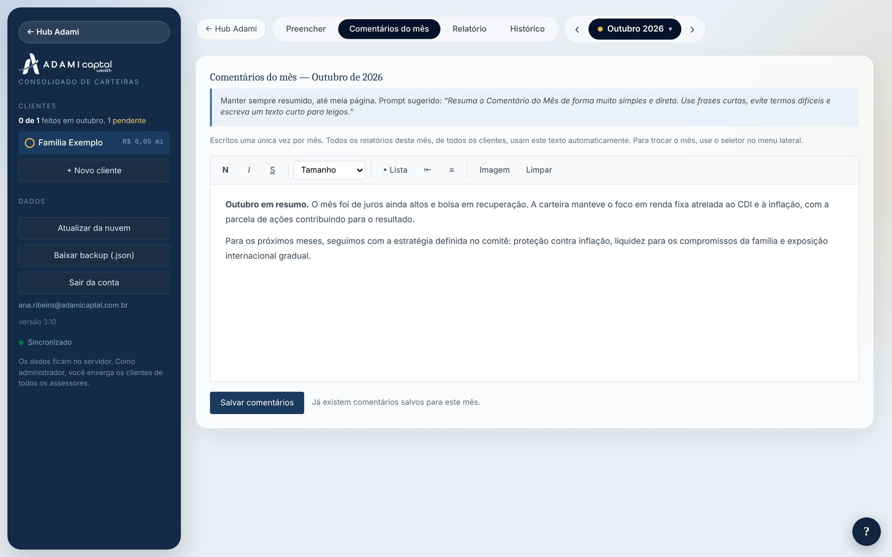
A rentabilidade da carteira é a média das contas ponderada pelo saldo de abertura de cada uma, e os meses são compostos, nunca somados. Por isso, num mês com aporte grande, o resultado em reais pode subir muito sem que a rentabilidade em % acompanhe. A rentabilidade offshore é em dólar e não inclui a variação cambial; isso está escrito no rodapé do relatório.
O diagnóstico patrimonial da família em uma página: composição do patrimônio, projeção até a aposentadoria, renda possível, sucessão, proteção, previdência e alavancagem.
À esquerda fica o formulário; à direita, o relatório se monta sozinho conforme você preenche. Não há botão de calcular. Aberta pela ficha do CRM (Ferramentas para este cliente), a ferramenta já vem com nome, idade, profissão, estado civil e patrimônio.
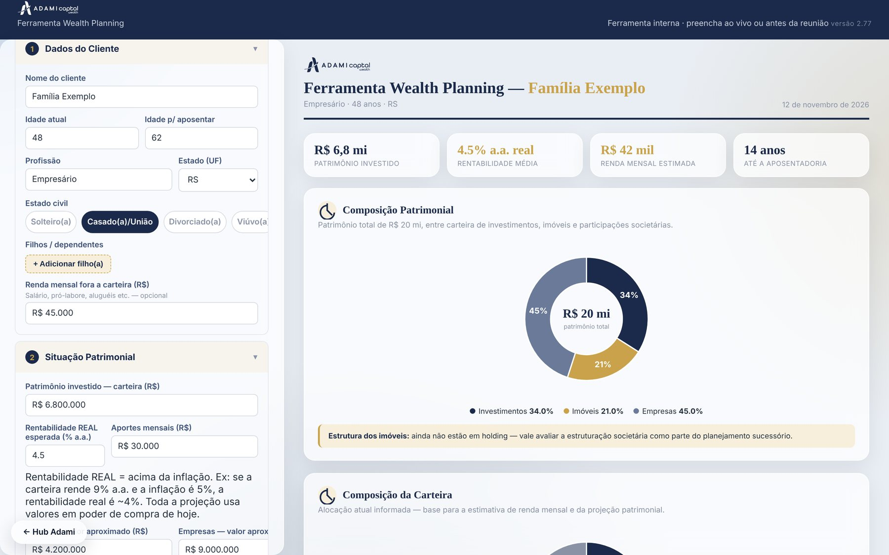
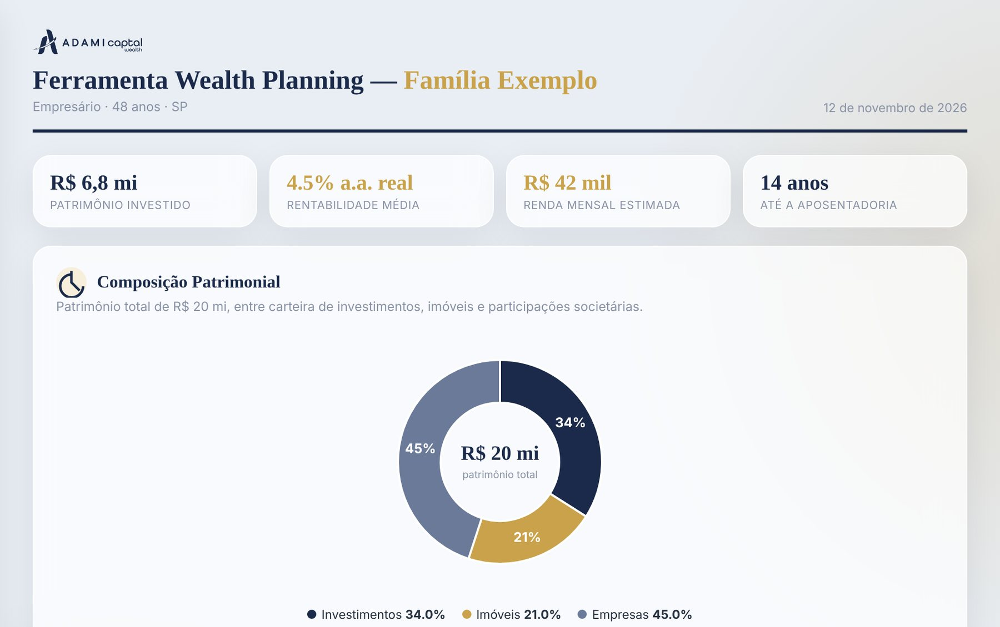
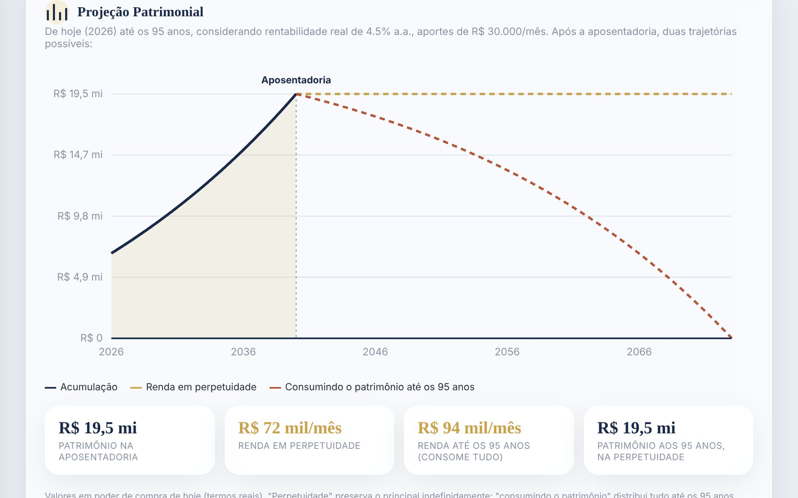
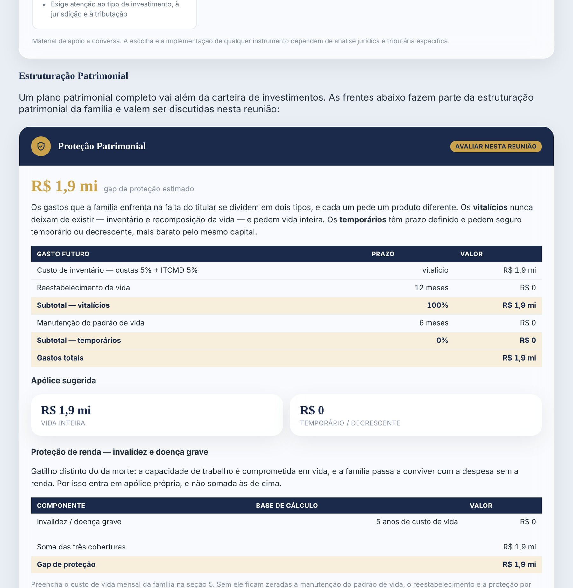
As projeções são estimativas em valores de hoje e não garantem resultado. A escolha de instrumentos de sucessão depende de análise jurídica e tributária. O relatório já traz esse aviso; reforce na conversa.
Monta o Plano Patrimonial e a Análise de Enquadramento do cliente em Word, com a política de investimentos, as bandas de alocação e as movimentações sugeridas.
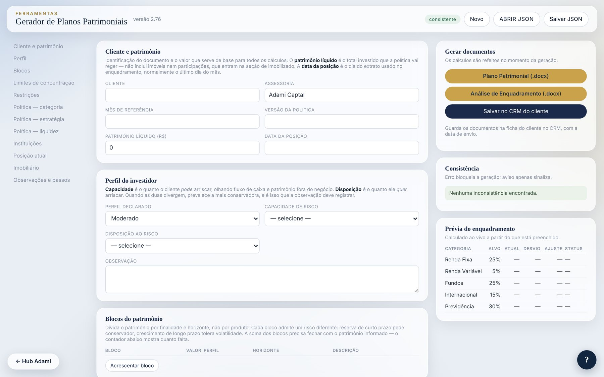
| Seção | O que preencher |
|---|---|
| Cliente e patrimônio | Nome, data, patrimônio financeiro total e objetivo. |
| Perfil do investidor | Perfil de suitability, capacidade e disposição para risco, horizonte. |
| Blocos do patrimônio | Como o patrimônio se divide por finalidade (reserva, renda, crescimento, sucessão). |
| Limites e restrições | Concentração máxima por emissor e por classe; restrições e particularidades do cliente. |
| Política de alocação | Faixas mínima, alvo e máxima por categoria e por estratégia. |
| Política de liquidez | Quanto precisa estar disponível em cada prazo. |
| Instituições e posição atual | Onde está o dinheiro hoje, por categoria, estratégia e liquidez. |
| Patrimônio imobiliário | Imóveis, com valor e situação. Use "Acrescentar imóvel". |
| Observações e próximos passos | O que foi combinado e as movimentações sugeridas. |
Salvar JSON guarda o preenchimento num arquivo no seu computador; Abrir JSON retoma de onde parou. Útil para atualizar o plano no ano seguinte sem digitar tudo de novo.
A consolidação do patrimônio imobiliário do cliente private: imóveis, projetos em andamento e histórico de retornos, numa apresentação pronta.
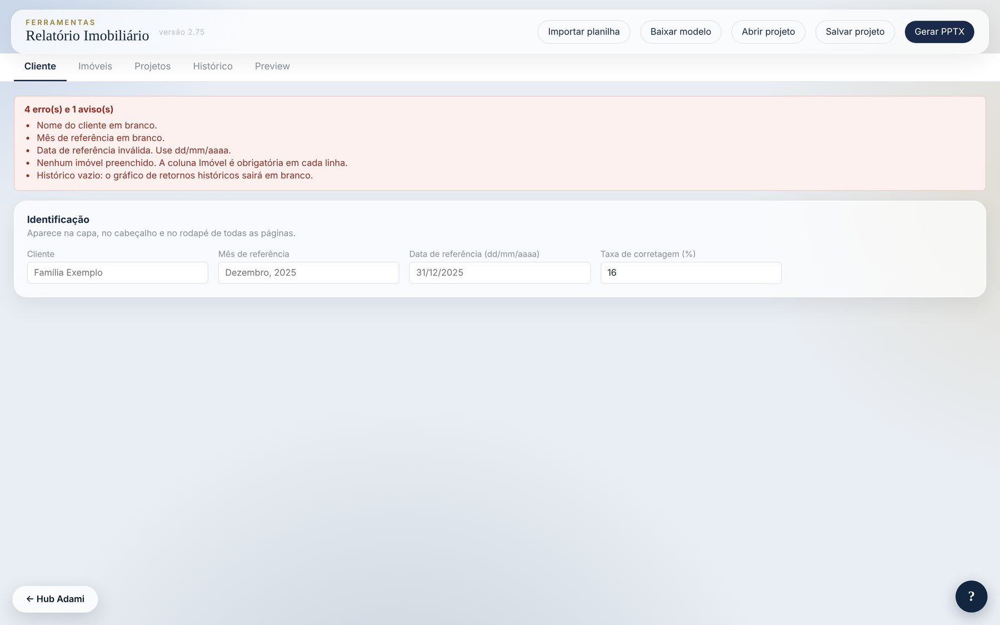
O material do comitê de investimentos do mês. O comitê preenche; o assessor consulta e baixa o PDF para conversar com o cliente.
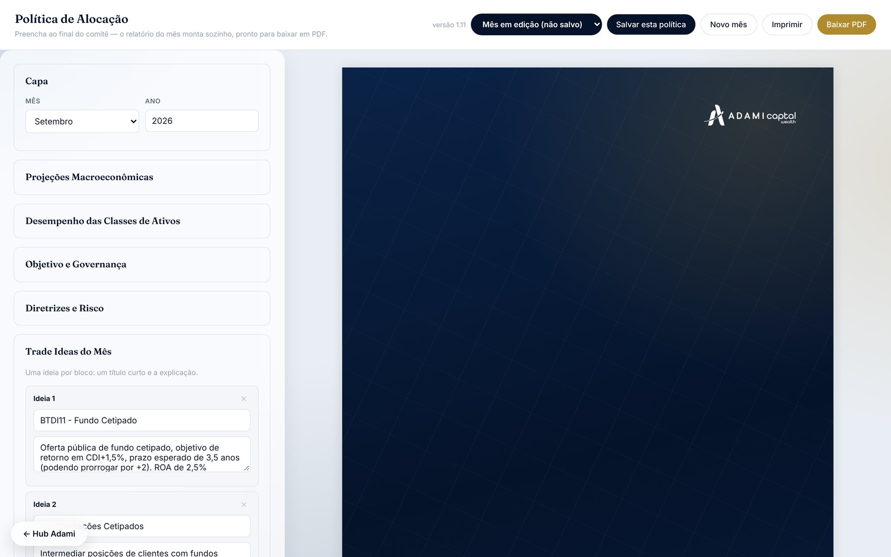
As recomendações de renda variável da casa: compra e venda, swing trade e operações estruturadas, com o card pronto para o grupo de clientes e o histórico de resultados.
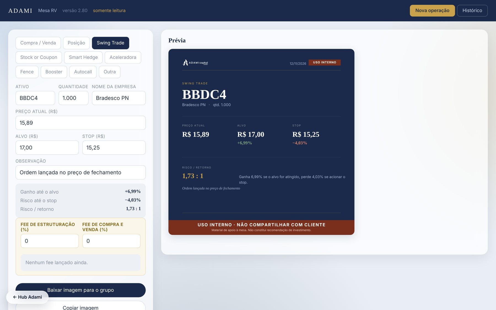
Em Histórico ficam todas as operações registradas, com filtro por tipo e por situação (em aberto ou encerradas), o resultado de cada uma e a taxa de acerto. Os clientes que entraram em cada operação ficam vinculados a ela.
O assessor pode montar e baixar cards. O registro no histórico e o encerramento (atingiu o alvo, stopou, encerrar manualmente) são feitos pela Mesa RV. No seu acesso aparece "somente leitura".
Na hora de alocar o dinheiro de um cliente, mostra quanto já foi boletado e quanto ainda falta, calculado a cada linha.
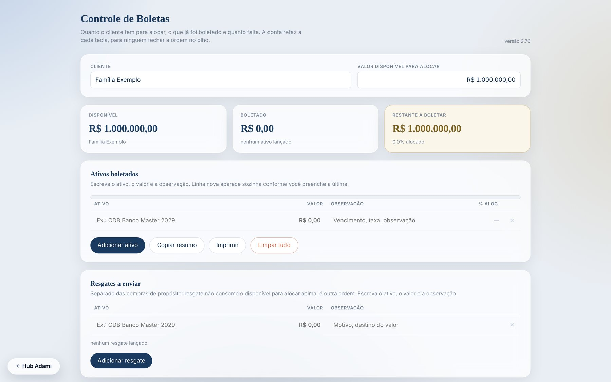
Contas rápidas para usar dentro da reunião, com o cliente olhando a tela.
Responde duas perguntas: quanto o cliente precisa juntar para manter o padrão de vida, e quanto ele pode retirar por mês sem acabar com o patrimônio. Tudo em valores reais, já descontada a inflação.
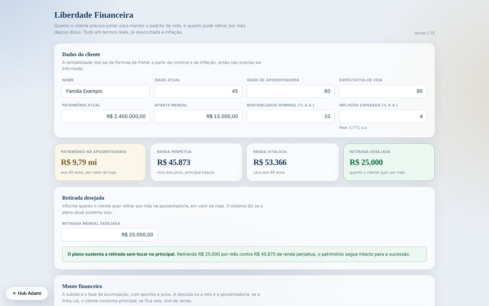
O resultado mostra o patrimônio na aposentadoria, a renda perpétua (preservando o patrimônio), a renda consumindo o patrimônio até a expectativa de vida, o monte financeiro necessário e tabelas de sensibilidade. Salvar no CRM, no fim da página, guarda a simulação em PDF na ficha do cliente; aberta pela ficha, ela já vem com nome, idade e patrimônio.
Quando o cliente tem um título que paga pouco e quer trocar por um que paga mais, a saída antecipada costuma ter deságio. O simulador mostra em quanto tempo a taxa nova compensa essa perda.
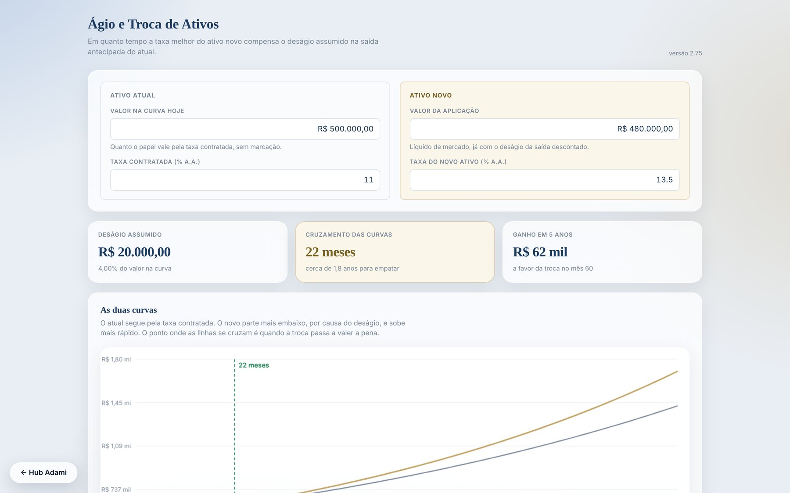
Ajuda a planejar a receita do mês com renda variável. Para swing trade e para estruturadas, informe o número de clientes, o volume por cliente no mês, as ordens enviadas e o ROA por operação. O simulador mostra o PL trabalhado, a receita do escritório, a sua receita e quanto da meta do mês já está coberto. Mais abaixo, ele sugere cenários para atingir a meta.
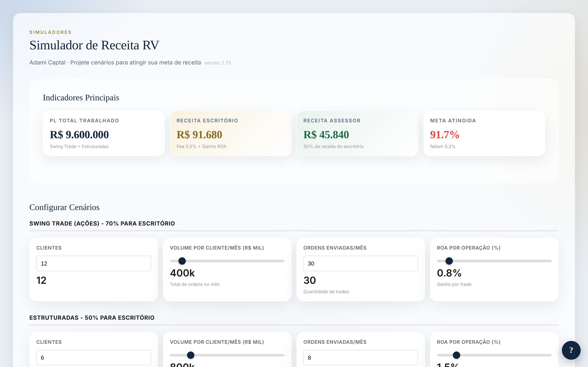
O seu fechamento do mês, aberto linha a linha. Aparece depois que o Financeiro fecha e libera o mês.
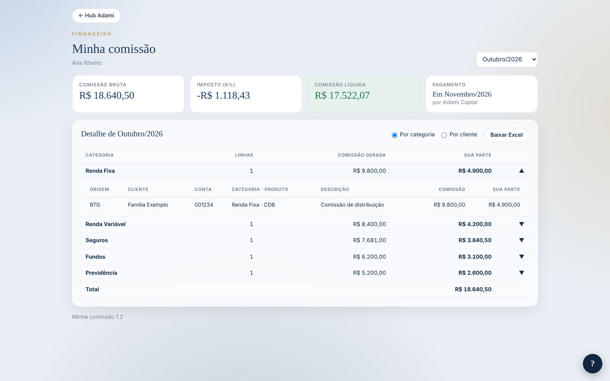
Anote a linha (cliente, conta e produto) e fale com o Financeiro. Ajustes entram no fechamento seguinte.
O que fazer antes de chamar alguém.
| Situação | O que fazer |
|---|---|
| O código não chegou no e-mail | Espere 2 minutos e olhe o spam. Se o app autenticador estiver ligado, use o código do app. Se não estiver, clique em "Mandar outro código" (há um intervalo de 30 segundos entre envios). Os códigos anteriores continuam valendo: use qualquer um que chegar. |
| "Código inválido" no app | Confira se está usando a conta Hub Adami no app (não a do BTG) e se o relógio do celular está no automático. Digite o código antes de ele trocar. |
| Conta bloqueada por 30 minutos | Foram muitas tentativas erradas. Espere o tempo e tente com calma. Persistindo, fale com a administração. |
| O Hub pediu o código de novo | Normal: o acesso vence à meia-noite. Confirme e siga. |
| Não vejo uma novidade anunciada | Recarregue com Ctrl + Shift + R (Windows) ou Cmd + Shift + R (Mac) e confira o selo de versão no rodapé. |
| Um módulo não aparece ou está bloqueado | O seu perfil não libera. Peça à administração. |
| Não acho um cliente no CRM | Use a busca no alto. Confira Captados e Desqualificados. Se o cliente é de outro assessor, ele não aparece para você. |
| O relatório saiu com números errados | Clique em Conferir dados e mostre à administração o que está diferente do extrato. |
| O PDF saiu cortado | Use Gerar PDF, que não depende da janela de impressão. Se preferir imprimir: margens "Padrão", escala 100% e "Gráficos de segundo plano" marcado. |
| Não acho um cliente ou uma ferramenta | Aperte Ctrl + K (no Mac, Cmd + K) e digite parte do nome ou a conta. |
| Parou de pedir o código | Você marcou "Lembrar este computador". Vale 7 dias. Para cancelar: Segurança, Aparelhos lembrados, Esquecer. |
| Troquei de celular | Peça para zerar o app autenticador da sua conta e ligue de novo no celular novo. |
| Esqueci a senha | Tela de login, Esqueci minha senha. |
Algo deu errado? Clique no ? no canto da tela, em Reportar um problema, escreva o que estava tentando fazer e o que apareceu, e clique em Enviar. A foto da tela, a versão e os erros do navegador vão juntos para o master. Desmarque a foto se houver algo na tela que não deva ir.
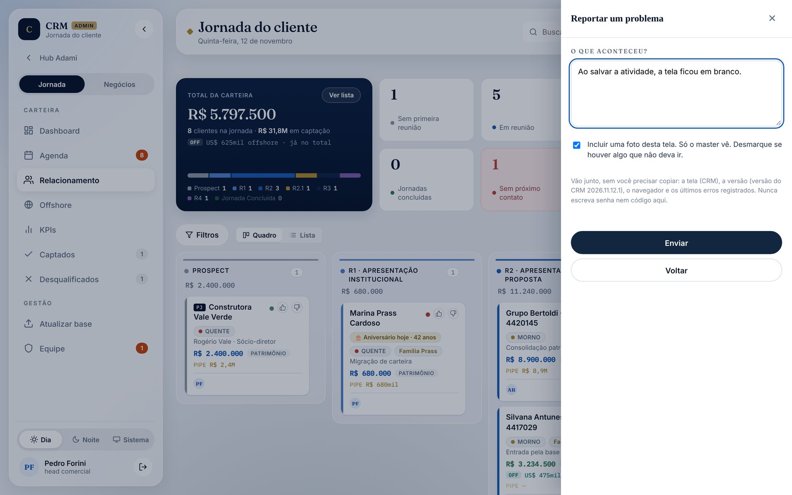
Nunca escreva senha nem código no Reportar um problema, no WhatsApp ou no e-mail. Ninguém da Adami vai pedir.
| Tarefa | Capítulo | |
|---|---|---|
| ☐ | Receber o convite e criar o acesso em adamicaptal.com.br/hub | 02 Primeiro acesso |
| ☐ | Ligar o app autenticador em Segurança | 03 Segurança |
| ☐ | Marcar "Lembrar este computador por 7 dias" no seu computador | 03 Segurança |
| ☐ | Salvar o Hub nos favoritos e instalar o ícone no celular | 04 Tela inicial |
| ☐ | Escolher o visual (Dia, Noite ou Sistema) | 04 Tela inicial |
| ☐ | Conferir no CRM se a sua carteira está completa | 06 CRM |
| ☐ | Marcar o próximo contato de cada cliente ativo | 06 CRM |
| ☐ | Decidir se compartilha a agenda com a equipe | 06 CRM |
| ☐ | Ler a trilha R1 a R4 no Processo Comercial | 07 Processo Comercial |
| ☐ | Abrir o Relatório Consolidado de um cliente e gerar o PDF | 08 Carteiras |
| ☐ | Fazer um Wealth Planning de teste com dados fictícios | 09 Wealth Planning |
| ☐ | Ler os avisos da casa | 04 Tela inicial |
| Termo | Significado |
|---|---|
| Hub | O portal interno da Adami Captal, com todos os módulos. |
| Pipe | O patrimônio que pode vir para o escritório. Quente, morno ou frio indica a chance e o prazo. |
| NNM (Net New Money) | Captação líquida: o que entrou menos o que saiu no período. |
| Onshore e offshore | Investimentos no Brasil (em reais) e no exterior (em dólares). Aparecem sempre separados. |
| PTAX | Cotação oficial do dólar do Banco Central, usada como referência. |
| R1, R2, R2.1, R3, R4 | As reuniões da trilha comercial (capítulo 7). |
| Advisory, Exclusive, Private | Os segmentos por patrimônio (capítulo 7). |
| Investor | O especialista de investimentos que acompanha o assessor nas reuniões de proposta e consolidação. |
| App autenticador | Aplicativo de celular que gera o código de acesso a cada 30 segundos. |
| Botão ? | O botão no canto de todas as telas: busca (Ctrl + K), ajuda da tela e Reportar um problema. |
| Selo de versão | O número da versão no rodapé de cada módulo, para saber se você está vendo a versão mais nova. |
| Enquadramento | A comparação da carteira atual com a política de alocação definida para o cliente. |
Manual do Hub Adami · versão 3.11 · novembro de 2026. Documento de uso interno da Adami Captal. As telas usam dados fictícios. Quando o Hub ganhar novidades, este manual é atualizado e o número de versão muda.